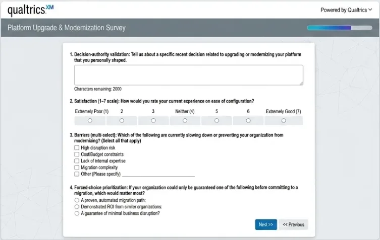
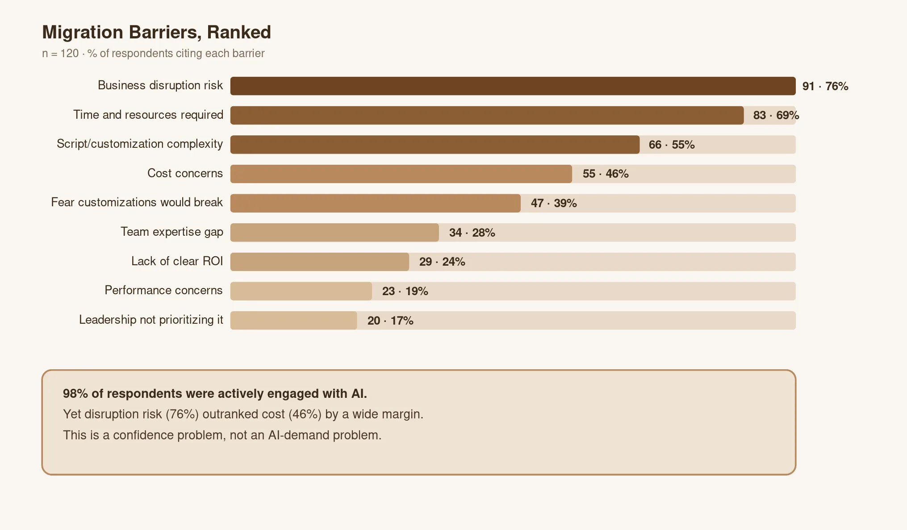
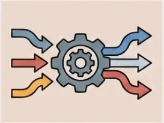
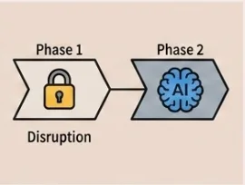
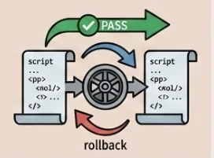
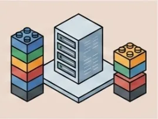
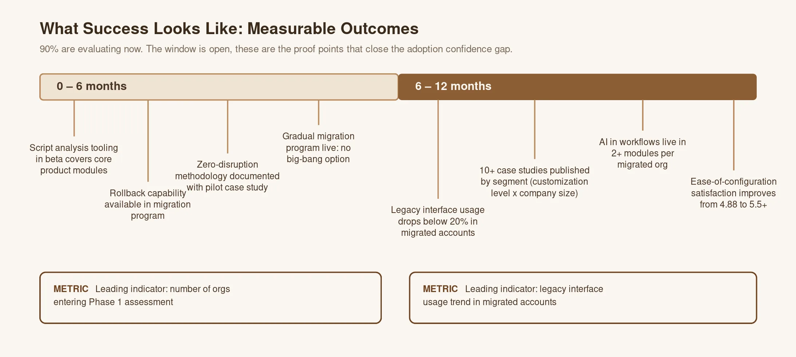

At a Glance
- Target audience
- IT Directors and Managers at enterprise organizations running a legacy platform configuration
- My Role
- Lead UX Researcher (survey design, screener logic, fielding, synthesis)
- Cross-functional Partners
- Product Managers | Platform Leadership | Design | Research Operations | Engineers
- Timeframe
- Q2 2026
- Methods Used
- Quantitative survey | Screener design | Phone + online recruitment | Cross-study synthesis
- Sample
- n= 150 respondents who were screened, qualified as platform decision-makers, reached through a mix of phone interviews and self-serve online fielding
- Impact
- Reframed the roadmap from feature-first to trust-first | Produced the "Adoption Contract" framework | Disruption risk emerged as the dominant barrier, well ahead of cost
The Question We Couldn't Answer
Enterprise customers had spent years layering custom scripts, business rules, and configurations onto their legacy platform setup. In some accounts, a very substantial accumulation built up over half a decade or more. Every upgrade cycle became a drawn-out project, and leadership had no quantified sense of whether disruption risk, cost, or something else entirely was the dominant blocker to modernization and migration.
I used a Learning Plan approach, mapping what we thought we knew, what we needed to know, and what research actions would answer the gap, to align stakeholders before choosing survey as the research method and writing a single survey question. What we set out to learn:
- How do platform decision-makers think about migrating from legacy customizations to modern architecture?
- Which AI capabilities generate genuine demand vs. theoretical interest?
- What barriers stand between current state and migration commitment?
- What conditions would accelerate adoption, and what's missing?
- How do readiness and urgency vary across segments (Company size)
- What success metrics we need to deliver on for adoption readiness?
Getting to the Real Answer

Scoping
- I conducted a scoping workshop to align with product and platform leadership on hypotheses to test, then designed a multi-block survey instrument with skip logic and quota management across company-size segments. Recruitment combined phone-based screening with self-serve online distribution to reach a robust base of qualified, screened respondents over several weeks of fielding.
- In order to successfully recruit decision makers, the screener was built around a validation-first principle: rather than relying on self-reported job titles, I added an open-ended prompt asking respondents to describe a specific modernization decision they'd personally influenced, plus persona-specific qualification paths (admin, platform owner, developer, manager, director) so decision authority could be confirmed rather than assumed.
- The main survey was built on Qualtrics, starting with understanding the current-state assessment of the platform, migration-approach preference, barriers, and forward-looking adoption conditions, closing with a ranked, forced-choice prioritization exercise rather than an open "what matters to you" question, specifically to avoid halo effects where everything rates well in isolation.
Cross-Functional Partnership
Product Management: Aligned on the research questions before fielding, using a Learning Plan approach (what we know / need to know / research actions) to get stakeholder sign-off on hypotheses before writing survey questions.
Platform Leadership: Findings were synthesized into the "Adoption Contract" framework leadership used directly to gate roadmap sequencing.
Research Operations & Engineering: Partnered on fielding logistics and screener design (phone + self-serve online distribution).
Who responded
- Respondents were screened for real decision authority, not just on their job title: 100% were final decision-makers, shared decision-makers, or strong influencers.
- 98% were already actively engaged with AI (piloting or beyond, not AI-naive)
- 79% carried moderate-to-heavy customization (66% said over half of that customization was business-critical)
- Tenure skewed long: 51% had 5+ years with their current platform instance, 84% had 3+ years.
How the data was analyzed
- Frequency analysis on the multi-select barriers question to produce a simple ranked list of what was blocking adoption
- Weighted point-allocation scoring on the ranked "top 3 conditions" questions: first, second, and third-place picks were weighted and summed into a composite score, which is what produced the tiered must-have vs. strong-preference structure in the "Adoption Contract"
- Mean scores and top-box scoring across every numeric scale question
- A forced-choice trade-off question layered on top of the appeal battery to cut through halo effects
- Cross-tabulation across four segmenting variables: company size, platform tenure, customization depth, and AI adoption stage
- Thematic coding of open-text responses to confirm the quantitative rankings matched what respondents said in their own words
What we found
It's a confidence problem, not a demand problem
- Even though the large majority of respondents were already actively engaged with AI, disruption risk to their current environment outranked every other concern, including cost, as the top barrier to migrating, by a wide margin.
- Time and resources required, and the complexity of translating existing customizations, followed close behind.
- Cost concerns ranked lower than expected.
The migration surface is really three compounding problems
- Accumulated customization: most respondents were running a meaningful volume of custom scripts and business rules built up over years, each one a migration decision (test, replace, retire, or translate)
- Module breadth: the average respondent had several active modules in use, each carrying its own separate migration surface
- Ongoing dependency on the legacy interface: even among customers actively modernizing, a meaningful share of daily work still ran through the old interface, since it remained the known, stable, customized option
Tooling that addresses only one of these three dimensions leaves most of the real burden untouched.
Not a single respondent chose an all-at-once migration
Across the entire sample, zero respondents chose an all-at-once ("big-bang") approach, a striking, unanimous signal. Preference was almost equally split between a fully gradual, module-by-module approach and a hybrid path. This wasn't a messaging preference to work around but as a hard constraint the roadmap needed to design for directly.
The window to act is now
A large majority of respondents were already either actively evaluating or had decided to proceed with modernization, not "someday," but within the current planning cycle. Leadership support and organizational readiness both scored high within this group, suggesting the constraint wasn't internal buy-in. It was the absence of a credible path forward.
The Adoption Contract

Rather than vague wishes, respondents converged tightly on a short list of concrete, ranked requirements. Two tiers emerged clearly, and this framework became the artifact leadership used to gate the roadmap:
Must-haves, named as a top priority by a strong majority of respondents:
- A clear, credible migration path paired with automated tooling
- Automated handling of script migration: manual or services-led translation doesn't scale to the volumes customers are running
- A minimal-disruption guarantee, backed by a proven rollback methodology rather than just a claim
Strong preferences, named as a top priority by a meaningful minority:
- Performance guarantees post-migration
- A gradual, incremental default rather than a single cutover
- Proof: peer success stories and demonstrated ROI, especially from organizations with comparable customization depth
Customers aren't resisting AI-native adoption because AI is undesirable. They're resisting it because modernization feels risky, brittle, and hard to reverse. The roadmap needed to address the confidence problem directly, not double down on AI capability and assume trust would follow.
Path forward

1. Prioritize migration tooling over new AI surface features. The top-scoring condition and 79% of the addressable market can't act without it; AI features don't land without it.

2. Sequence the roadmap: reduce disruption risk first, then scale AI. Phase 1 is a zero-disruption migration methodology and tooling. Phase 2 is AI surface features, introduced only in verified, migrated environments.

3. Invest in script translation and rollback as a first-party product capability, not a services engagement. 54% cite script migration complexity as a top barrier and 79% carry moderate-to-heavy customization (40–200+ scripts per enterprise customer); a services-led approach doesn't scale to that volume.

4. Build one phase-based migration architecture and remove the big-bang option entirely. With 0% of respondents choosing it (53% gradual, 47% hybrid), this is a hard constraint, not a preference to accommodate through messaging.
Success Metrics

Limitations and Reflections
Navigating Constraints & Alignment
Managing Ambiguity: Platform leadership's working assumption going into this study was that cost was the primary barrier to migration. The data showed otherwise, disruption risk (74%) outranked cost (46%) by a wide margin. Rather than debate the assumption directly, I used the ranked, forced-choice survey data as the neutral anchor: it reframed the roadmap conversation away from an unresolved internal disagreement and toward a specific, evidence-backed sequencing decision (migration tooling before new AI features) that leadership adopted as binding.
The Technical Trade-off: The research's ranked "Adoption Contract" identified a clear, automated script-migration path as the single highest-priority customer requirement (193 points, 29% ahead of the next-strongest condition), the thing most likely to unblock adoption. But automated script translation at the scale customers actually needed it, reliably handling 40-200+ custom scripts per enterprise account, was recognized during roadmap planning as a genuinely complex, resource-intensive engineering problem, not something that could be built and shipped as a single capability in one push. Rather than let the finding stall behind that complexity, or push for a single monolithic build engineering couldn't realistically commit to, I helped phase the recommendation into two stages: an initial phase focused on a documented zero-disruption migration methodology and a rollback capability, scoped to ship to beta within six months, and a second phase for the fuller automated script-translation capability as a longer-horizon investment, still sequenced ahead of new AI feature work, just not attempted all at once. Phasing it kept the research's core finding, disruption risk had to be addressed before AI capability, intact in the roadmap, while giving engineering a version they could actually commit to.
Reflections
It's important to separate willingness from readiness, the biggest lesson was that low migration uptake didn't mean customers didn't want the new experience; it meant they didn't trust the transition to be safe. That distinction completely changed the roadmap conversation: the fix wasn't more AI capability, it was proof that the move itself wouldn't break what customers had already built.